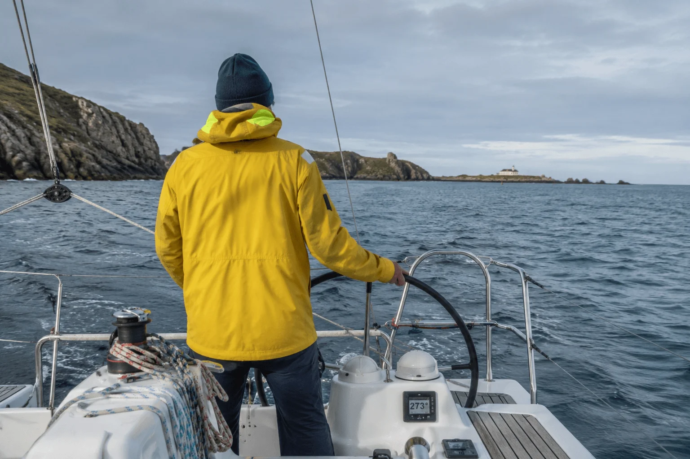

Plaisancier breton — 30 ans de navigation
J'ai grandi à Lorient, à deux pas du port. Premier bateau à 16 ans — un optimist hérité de mon père. Depuis, je n'ai jamais arrêté : trente ans de navigation, une dizaine de bateaux entre les mains, et autant d'hivernages, de carénages et de pannes résolues dans le cockpit ou au mouillage.
« Ce n'est pas compliqué, mais il faut le savoir avant de partir en mer. »
Je ne suis pas mécanicien de formation — je suis ingénieur dans le bâtiment naval. Mais c'est sur mes propres bateaux que j'ai tout appris : le moteur, l'accastillage, la sellerie, l'électronique embarquée, les voiles.
Je tiens Maritime Passion depuis 2024 pour partager ce que j'ai mis des années à apprendre — et éviter aux autres plaisanciers de faire les mêmes erreurs coûteuses.